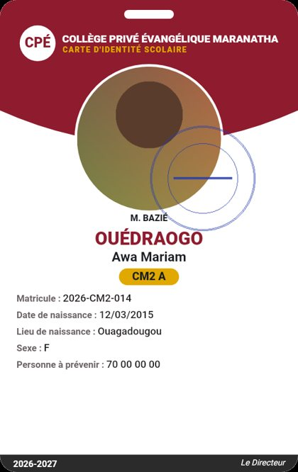
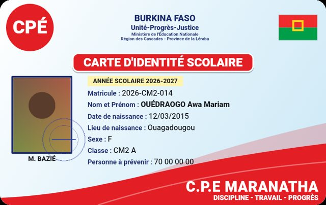
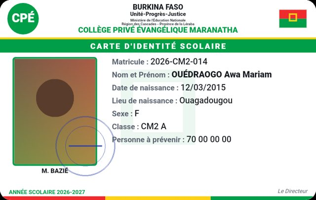
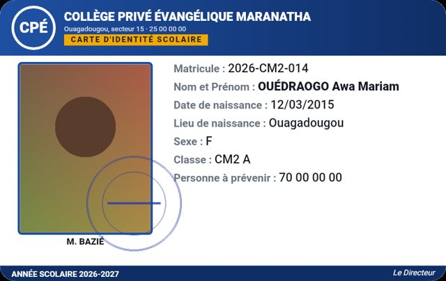
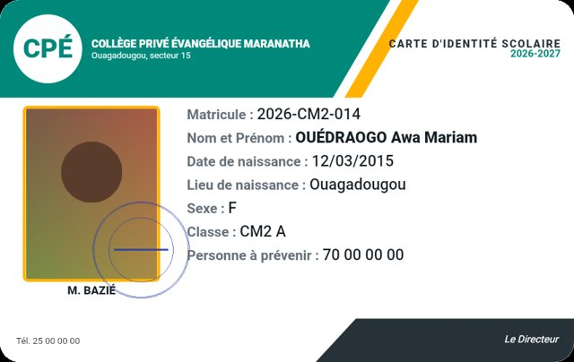
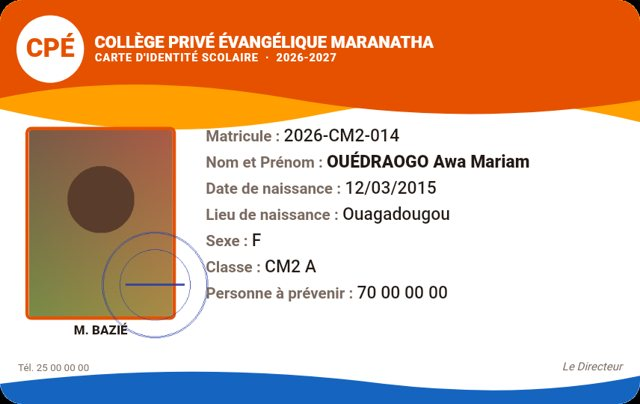
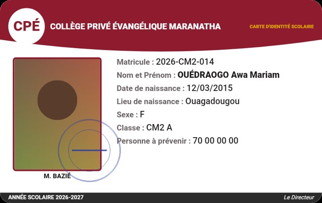
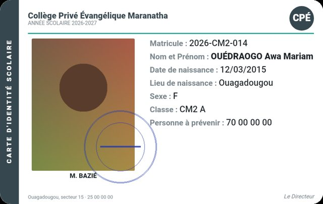
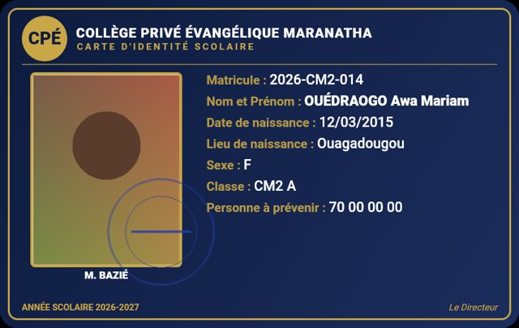
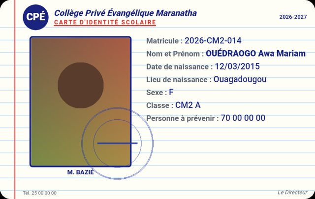

Application gratuite · Android, Windows, macOS
Les cartes scolaires de toute l'école, prêtes à imprimer en une après-midi.
Importez la liste Excel, prenez les photos carte par carte, et imprimez des planches A4 de 10 cartes au format carte bancaire, avec traits de coupe.
Fonctionne sans Internet. Les données restent sur votre appareil.

En vidéo
Carte Scolaire en 50 secondes
Du modèle à la planche imprimée : regardez comment un établissement prépare toutes ses cartes scolaires.
Fonctionnement
De la liste de classe à la planche imprimée
Choisir le modèle
Un des 10 modèles, au format voulu en millimètres, avec le logo, les armoiries, le cachet et la devise de l'établissement.
Importer les élèves
Fichier Excel ou CSV : les colonnes Nom, Classe, Matricule, Personne à prévenir… sont reconnues automatiquement.
Prendre les photos
Carte par carte, depuis la galerie ou l'appareil photo. Recadrage automatique au format identité.
Imprimer
PDF en planche A4 (10 cartes par feuille) ou une carte par page pour imprimante PVC.
Modèles
Dix modèles, tous modifiables
Titre, libellés, champs affichés, couleurs, tailles du texte et de la photo : chaque modèle s'adapte à l'établissement, en paysage comme en portrait.









Et un modèle Fond personnalisé : créez votre fond dans Photoshop ou Illustrator, l'application place la photo et les informations de chaque élève par-dessus.
Sur ordinateur
Le téléphone devient l'appareil photo de l'ordinateur
Pas de webcam ? Scannez le QR code affiché par l'application : chaque photo prise avec le téléphone arrive directement sur la carte de l'élève à l'écran. Rien à installer sur le téléphone, pas besoin d'Internet, seulement le même Wi-Fi.
Sur l'ordinateur, cliquez sur Caméra du téléphone : un QR code s'affiche.
Scannez-le avec l'appareil photo du téléphone : une page s'ouvre avec le nom de l'élève en cours.
Touchez Prendre la photo : elle apparaît sur la carte et l'application passe à l'élève suivant.
Fonctions
Pensé pour les secrétariats et les imprimeurs
Éléments déplaçables
Touchez la photo, le logo, les armoiries, le cachet ou un texte, puis glissez-le ; pincez pour l'agrandir ou le réduire.
Un projet par école
Chaque établissement a son projet : modèle, élèves et photos sont gardés à part, réutilisables l'année suivante.
Modèles partageables
Exportez un modèle complet en ZIP (réglages, logo, armoiries, cachet, fond) et ajoutez-le sur un autre poste.
Cadrage guidé
Appareil photo avec gabarit de visage, puis recadrage dans le format de la carte. On peut recadrer à tout moment.
Modèle Excel fourni
Téléchargez le fichier à remplir depuis l'application, puis importez-le : les colonnes sont reconnues automatiquement.
Protégé et sous licence
Mot de passe à l'ouverture. Essai gratuit avec filigrane, puis licence 1 mois, 1 an ou définitive liée à l'appareil.
Télécharger
Installer sur Android ou Windows
L'APK est compilé automatiquement à chaque mise à jour du code.
- Ouvrez le lien sur le téléphone et téléchargez le fichier.
- Ouvrez le fichier téléchargé.
- Si Android le demande, autorisez l'installation depuis cette source.
- Sur Windows 10/11 : lancez l'installateur. Si SmartScreen s'affiche, cliquez « Informations complémentaires » puis « Exécuter quand même ».